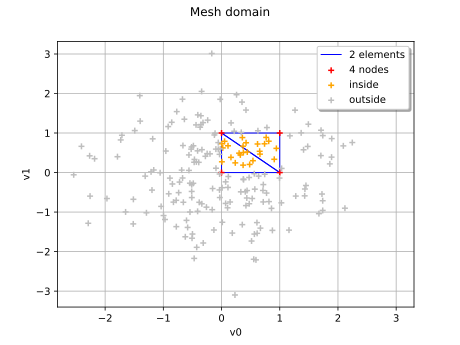

MeshDomain2¶
(Source code, svg)
{kind=link}

- class otmeshing.MeshDomain2(*args)¶
Adaptor to convert a Mesh to a Domain, with signed distance.
- Parameters:
- mesh
Mesh Underlying mesh.
- mesh
Methods
computeDistance(*args)Compute the Euclidean distance of a given point to the domain.
contains(*args)Check if the given point is inside of the domain.
Accessor to the object's name.
Get the dimension of the domain.
Get the simplex algorithm.
Get the lower bound.
getMesh()Get the mesh.
getName()Accessor to the object's name.
Get the upper bound.
hasName()Test if the object is named.
Accessor to the parallel flag.
setEnclosingSimplexAlgorithm(enclosingSimplex)Set the simplex algorithm.
setName(name)Accessor to the object's name.
Examples
Compute the distance from a point to a domain defined from the mesh of the unit square
>>> import otmeshing >>> import openturns as ot >>> dim = 2 >>> mesh = ot.IntervalMesher([1] * dim).build(ot.Interval(dim)) >>> domain = otmeshing.MeshDomain2(mesh) >>> p = [5.0] * dim >>> distance = domain.computeDistance(p)
- __init__(*args)¶
- computeDistance(*args)¶
Compute the Euclidean distance of a given point to the domain.
- Parameters:
- point or samplesequence of float or 2-d sequence of float
Point or Sample with the same dimension as the current domain’s dimension.
- Returns:
- distancefloat or Sample
Euclidean distance of the point to the domain.
- contains(*args)¶
Check if the given point is inside of the domain.
- Parameters:
- point or samplesequence of float or 2-d sequence of float
Point or Sample with the same dimension as the current domain’s dimension.
- Returns:
- isInsidebool or sequence of bool
Flag telling whether the given point is inside of the domain.
- getClassName()¶
Accessor to the object’s name.
- Returns:
- class_namestr
The object class name (object.__class__.__name__).
- getDimension()¶
Get the dimension of the domain.
- Returns:
- dimint
Dimension of the domain.
- getEnclosingSimplexAlgorithm()¶
Get the simplex algorithm.
- Returns:
- algo
EnclosingSimplexAlgorithm Simplex algorithm.
- algo
- getLowerBound()¶
Get the lower bound.
- Returns:
- lowerBound
Point Value of the lower bound.
- lowerBound
Examples
>>> import openturns as ot >>> interval = ot.Interval([2.0, 3.0], [4.0, 5.0], [True, False], [True, True]) >>> print(interval.getLowerBound()) [2,3]
- getName()¶
Accessor to the object’s name.
- Returns:
- namestr
The name of the object.
- getUpperBound()¶
Get the upper bound.
- Returns:
- upperBound
Point Value of the upper bound.
- upperBound
Examples
>>> import openturns as ot >>> interval = ot.Interval([2.0, 3.0], [4.0, 5.0], [True, False], [True, True]) >>> print(interval.getUpperBound()) [4,5]
- hasName()¶
Test if the object is named.
- Returns:
- hasNamebool
True if the name is not empty.
- isParallel()¶
Accessor to the parallel flag.
- Returns:
- isParallelbool
Whether the object is considered thread-safe.
- setEnclosingSimplexAlgorithm(enclosingSimplex)¶
Set the simplex algorithm.
- Parameters:
- algo
EnclosingSimplexAlgorithm Simplex algorithm.
- algo
- setName(name)¶
Accessor to the object’s name.
- Parameters:
- namestr
The name of the object.